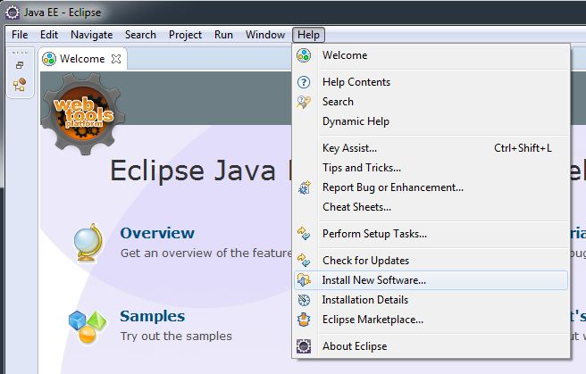
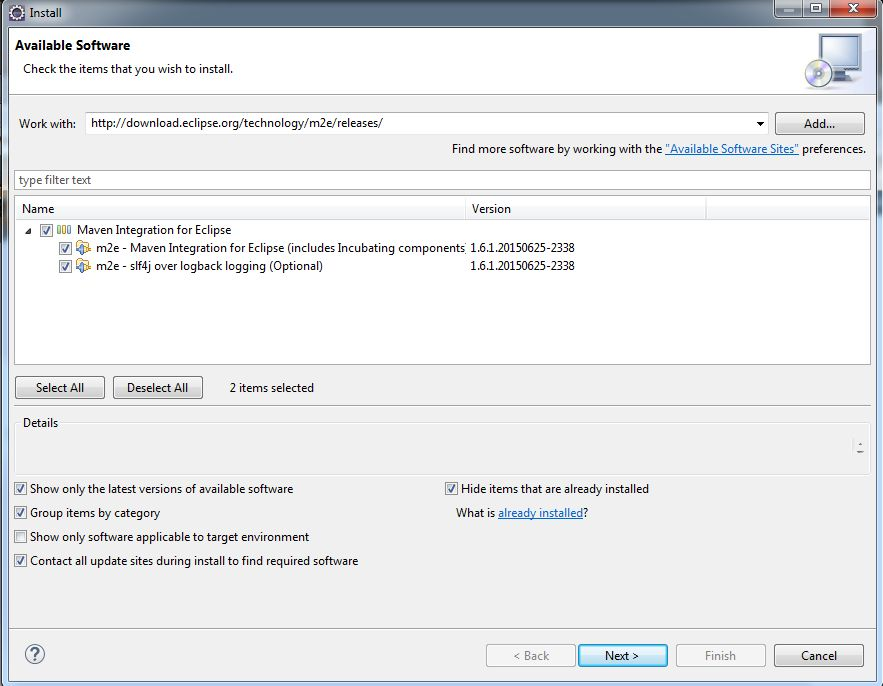
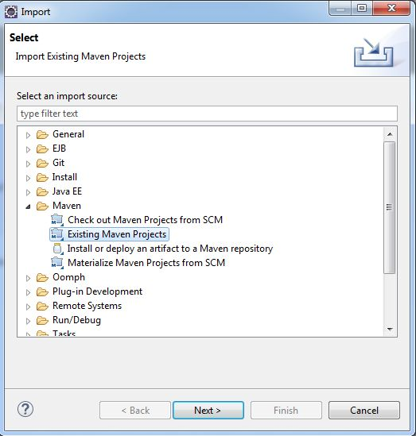
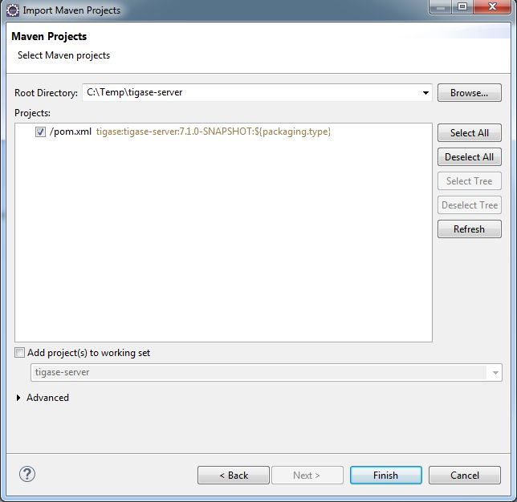

Once you have the main window open and have established a workspace (where most of your working files will be stored), click on Help and then Install New Software…

Under the Work With field enter the following and press enter: http://download.eclipse.org/technology/m2e/releases/
Note: You may wish to click the Add… button and add the above location as a permanent software location to keep the location in memory

You should see the M2 Eclipse software packages show in the main window. Click the check-box and click Next. Once the installer is finished it will need to restart Eclipse.
Once that is done, lets connect Eclipse to the cloned repository.
Click File and Import… to bring up the import dialog window. Select Maven and then Existing Maven Project.

Now click Next and point the root directory to where you cloned the git repository, Eclipse should automatically see the pom.xml file and show up in the next window.

Once the import is finished, you are able to now begin working with Tigase’s code inside Eclipse! Happy coding!